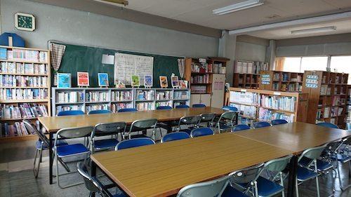
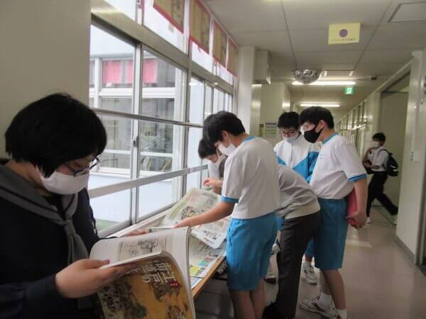
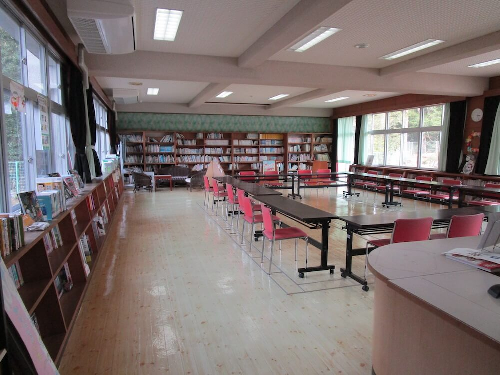
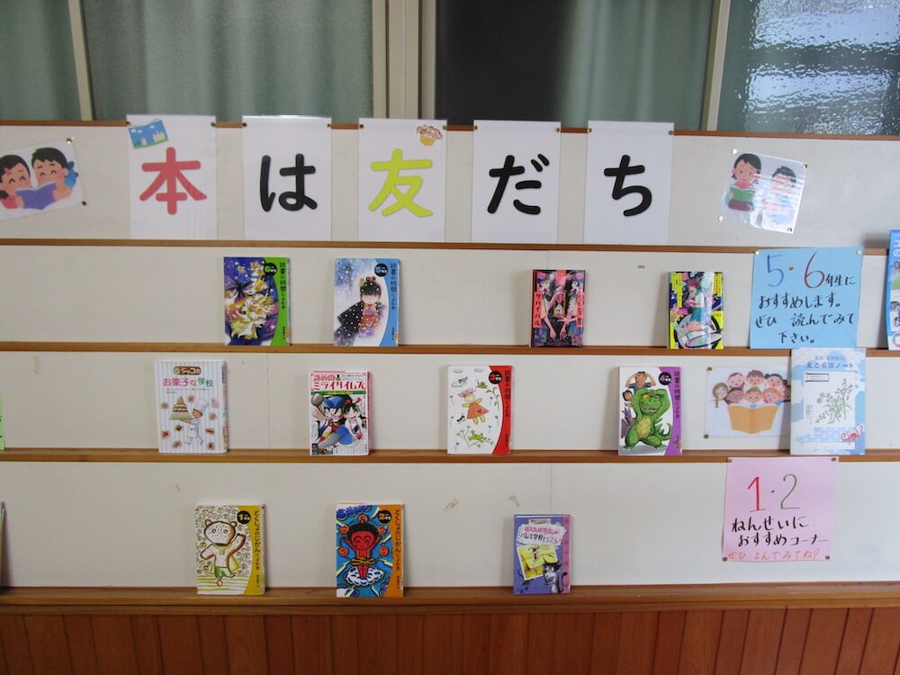
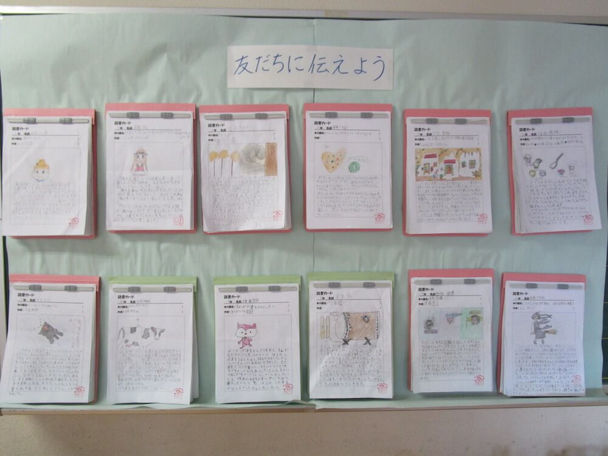
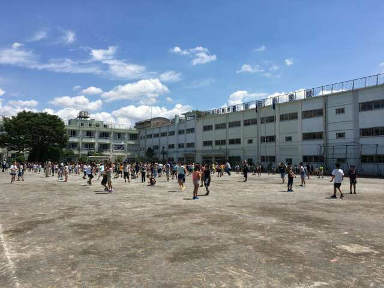
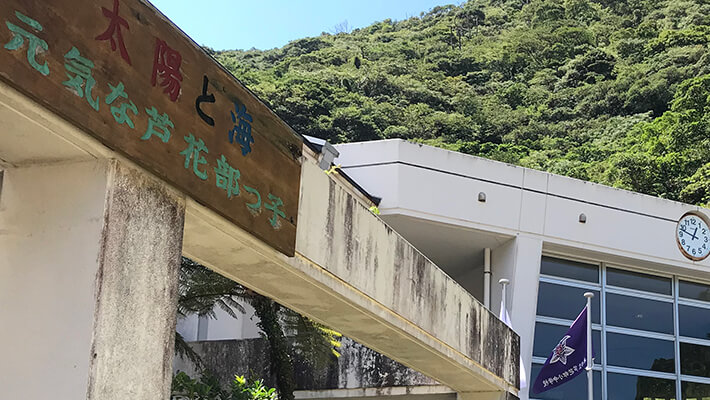

2020年度の入賞団体に、応募のきっかけ、読書推せん文に取り組んだときの児童・生徒の様子、コンクール参加後の読書活動の変化などについてお聞きしました。
※お話を伺った先生の肩書きは2020年度のものです。
「読書の時間」にビブリオバトルの延長で参加。生徒たちが自分の思いにこだわって書く姿が印象的でした。
子どもたちは「おもしろそう！」と、すぐにみんな、好きな本を誰にすすめようかと思い巡らせていました。
Q：コンクールに取り組まれた理由をお聞かせください。
A：本校では国語科の取り組みとして、読書を推進するために、家読カード、読書カードの提出を、定期的に課題としてきました。しかし、それもパターン化してしまい、生徒たちの取り組みに意欲が感じられなくなっていました。そんなとき、このコンクールを知りました。
また、私は国語の授業で、読書指導のひとつとして、「ビブリオバトル」を行ってきました。その授業の学習過程に、自分の好きな本を、自分が読んでほしい相手を意識して、「読みたい」という気持ちにさせる文章を書くという表現活動があります。それがこのコンクールの趣旨と合っていると考え、「ビブリオバトル」実施と併せて、コンクール出品を学習目標にしようと考えました。
Q：生徒のみなさんの、取り組みの様子はいかがでしたか？
A：「自分の好きな本」「選ぶ本はマンガでもよい」「伝えるのは特定の人」という条件が書きやすかったようで、みな意欲的に取り組んでいました。中には、「何冊も紹介したい！」と、数冊分書いた生徒もいました（最高は７冊でした）。また、250〜300字というのは、生徒たちにとって苦にならない字数で、取り組みやすかったようでした。
Q：応募をきっかけに、生徒のみなさんの読書活動に変化は見られましたか？
A：本校では、登校してきてから朝の学活開始までの10分間、朝読書を行っています。その際に、「これはおすすめだよ」と互いに、また教師に（私も何冊か紹介され、中学生の興味は今、これか？ と思うものを読みました）紹介する姿が、よく見られるようになりました。
Q：読書活動について、今後どのような取り組みをお考えですか？
A：読書離れが騒がれているので、生徒に興味を持たせるために、「良書の紹介」をしていきたいと常に考えています。そのために、まず図書館司書の先生と相談して、図書室の本の紹介ができる掲示や放送を実施し、図書室利用を増やすこと。そして、授業の中で読書への意識が高まるような学習活動を行うことを心がけたいと思っています。
2021年度、夏休みの課題として、生徒だけでなく保護者の方にも、「おすすめの本」を書いていただきました。100％の提出とはいきませんでしたが、保護者の方々も親として、子どもに読んでほしいと思う本があるのだな、と感じました。「家読」の啓蒙として、「おすすめの本」というのはとてもよい観点だと思います。今後も、これをキーワードにしていきたいと考えています。
（国語科 小坂ひろみ先生）
Q：コンクールに取り組まれた理由をお聞かせください。
A：清新第一中学校F組は知的障がいの特別支援学級で、現在、1年生から3年生まで26名の生徒が在籍しています。
F組では4年前から「読書の時間」を毎週1時間設定し、おすすめの本をみんなの前で発表するビブリオバトルやポップづくりなどに取り組んできました。新型コロナウイルスの影響で、2020年4月と5月が休校だった期間に、私は作文コンクールの新聞広告を見つけ、学校が再開したら取り組みたいと思いました。これまで、ビブリオバトル用に300字程度の発表原稿を書いていたことから、その延長でコンクールに参加しようと思い、同時に、生徒たちには特別支援学校・学級対象ではない一般の部でチャレンジしてほしいと考え応募しました。
Q：生徒のみなさんの、取り組みの様子はいかがでしたか？
A：学校の再開は6月の分散登校からであったため、9月の締め切りまでにあまり時間はありませんでした。生徒たちは、さっそく「お気に入りの一冊」を選び、ビブリオバトルの発表原稿を書く要領で書き始めました。ひとりで書けない生徒には、その本のどこがよかったのかを教員が聞き取り、生徒と対話しながら進めました。
ところが生徒たちは、教員のアドバイス通りには書こうとしませんでした。たとえば、『いちばんよくわかる犬種図鑑』という本について書いた生徒は、「自分が飼っていた犬が亡くなった。どんなことをしていたら、もっとあの子にとってよかったのだろうか」と書きました。犬に「亡くなった」とか「あの子」という書き方はしないのではないかと言うと、「でも、いいんです」と言って譲りません。また、介護の仕事の本について書いた生徒が「おじいちゃんやおばあちゃんが…」と書いたので、「高齢者」と表現したらとアドバイスすると、「このままにしたい」と譲りませんでした。
Q：コンクールへの取り組みを生かして、どのような活動をされましたか？
A：この貴重な経験を生かし、本や新聞などから情報を取り入れ、「防災」をテーマにした探究学習を行い発表しました。単なる調べ学習ではなく、仮説を立て「防災」を自分事としてまとめることに発展させました。
（F組主任 主任教諭 村上玲子先生）
Q：大野見小学校について教えてください。
A：中土佐町立大野見小学校は、児童数29名、学級数4学級の小規模校です。コンクールに応募した2020年度の児童数は34名で、そのうち３年生以上の児童が応募しました。
Q：コンクールに取り組まれたきっかけは何ですか？
A：学校でとっている「朝日小学生新聞」に、コンクール募集の記事が出ていたので、ホームページで確認して募集書類を送ってもらいました。その中の応募要項にあった250〜300字という字数を見て、これなら全校に投げかけられるなと思ったことがきっかけでした。それまで高知県で取り組んでいた読書感想文は、原稿用紙３枚程度の分量で、文章が苦手な子にとっては少々負担だったからです。
Q：コンクールへの応募を子どもたちに伝えたとき、どんな反応でしたか？
A：とてもいい反応でした。それまで物語についてしか書けなかった読書感想文が、図鑑でもいいしマンガでもいいと、ジャンルを限定されなかったことに、子どもたちはとても喜んでいました。「先生、ほんとになんでもいいが？」と聞き直してくる子もいました。
Q：子どもたちの取り組みの様子は、いかがでしたか？
A：はじめに子どもたちに、「今まで読んだ本の中で好きな本を１冊、図書室から持ってきていいよ。」と投げかけました。そして、「その本を誰に紹介したいか、その人にどんな訴えかけをするかということを、手紙感覚でまずは書いてごらん。」ということで取り組みをスタートさせました。書くことを嫌がる子は、ひとりもいませんでした。読書が苦手な子のほうが、お気に入りの１冊はすぐに決まったようでした。むしろ読書が大好きな子どもたちは、紹介したい本がたくさんあって、その中から１冊に決めることにとても苦労していました。
Q：応募をきっかけに、子どもたちの読書活動に変化は見られましたか？
A：応募やコロナ感染拡大防止をきっかけに、図書室の開館時間を増やしました。朝と昼休みしか借りられなかったところを、中間休み時間にも図書室をオープンするようにしました。また、町の図書館から本を借りてきて、学級文庫を充実させたことで、子どもたちは、より身近に本を感じられるようになったと思います。本の好きな子どもたちが、読書の苦手な子や、どれを借りたらいいか迷っている友だちに、「この本がおすすめだよ」と紹介している場面も見られるようになって、いい雰囲気だと思いました。
（５・６年担任 山脇智恵先生）
Q：コンクールに取り組まれた理由をお聞かせください。
A：コンクールの募集を知ったのは、新型コロナウイルスの感染拡大で４月、５月と学校が休校になった時期でした。私が自宅で新聞を読んでいると、コンクール募集の広告が載っていたので、おもしろそうだなと思いました。６月からは、クラスが半分ずつ登校する分散登校が始まりました。子どもたちとは、４月の始業式で顔を合わせて以来という状態でしたので、子どもたちのことを理解するきっかけになるような、何か楽しいことができないかと考えていました。普通の読書感想文ではなくて、「自分が読んでほしい人にすすめる」というところが面白いと思い、取り組んでみることにしました。
Q：コンクールへの応募を子どもたちに伝えたとき、どんな反応でしたか？
A：子どもたちからは、すぐに「おもしろそう！」という反応がありました。今までの感想文だと、「えーっ？」という反応だったと思うのですが、「好きな本をね、自分が読んでほしい人に紹介する作文だよ。どんな人に紹介する？」と問いかけると、すぐにみんな、誰に紹介しようかと思い巡らせているようでした。
Q：子どもたちの取り組みの様子は、いかがでしたか？
A：本が好きでいつも読んでいる子と、普段からあまり読んでいない子の間で、取り組みに違いがありました。本好きの子は、「本をすすめる相手は、目の前に存在する人じゃなくても誰でもいいですよ」と伝えると、自由に想像の翼を広げました。自分の好きだった本の主人公に、別の大好きな本を紹介したいというように、発想が広がった子もいました。一方で、本をあまり読んでいない子の中には、字を書くこと自体が苦手な子も結構いて、そんな子は苦戦していました。本は選べたけれど、どう書いたらいいかわからないという子には、授業が終わったあとに一対一で話をして、書き方の指導をする機会にもなりました。
（３年担任 南光院明子先生）
Q：芦花部小学校について教えてください。
A：奄美市立芦花部小学校は、奄美大島にある複式校です。コンクールに応募した年は３クラス、児童数は22名でした。
Q：コンクールに取り組まれた理由をお聞かせください。
A：コンクールのことは、「朝日小学生新聞」から送られてきたダイレクトメールで知りました。毎年、夏休みに作文の宿題を出すのですが、せっかくなのでいろいろなコンクールにチャレンジしてみようと思い、作文の課題候補に加えました。文字数が250〜300字と少なかったので、これなら長い文章を書き慣れていない子どもたちも、やる気を持って取り組めそうだと思ったことが、宿題に加えた大きな理由です。
Q：子どもたちの取り組みの様子は、いかがでしたか？
A：「お気に入りの本を誰かにすすめる」というコンセプトでしたが、例文に宇宙人やアニメのキャラクターでもいいと書かれていたのが、子どもたちにはとても新鮮だったようです。夏休みに借りて帰る本を学校図書館で探しているときも、誰にすすめようかという視点で本を選んでいたようです。国語の教科書の中に、「本を紹介しよう」という単元があったので、私は夏休み前にそれを振り返る授業をしました。また、どんな人にどんな本をすすめたら面白いかということを、クラス全員で話し合う時間も持ちました。子どもたちからは、亡くなったおじいちゃん、おばあちゃんにすすめたいとか、奄美の自然を全国に伝えたいとかいう意見が出てきました。『奄美の希少生物ガイド』というような、地方の出版社から発行された地元・奄美を扱った本がありますが、そういうものを紹介できるところが、このコンクールの、ほかにはないよさだと思います。夏休み前に、こうした話し合いを実施したことも、子どもたちが取り組みやすかった理由のひとつかもしれません。
Q：受賞してよかったことは何ですか？
A：書くことに苦手意識を持っている子も多い中で、このコンクールのような働きかけをすれば、やる気を持って取り組んでくれるのだということに、教師たちが気づいたのがよかったと思います。また、毎年の図書予算が限られているため、図書館には子どもたちが興味を持ちそうな本が少ししかないのが現状です。その意味で、今回、副賞としていただいた図書カードは、とてもありがたいものでした。図書カードでは、教科書で紹介されている本とは違う、最近はやりの本や絵本を、たくさん買わせていただきました。
（３・４年生担任 青木一紘先生）